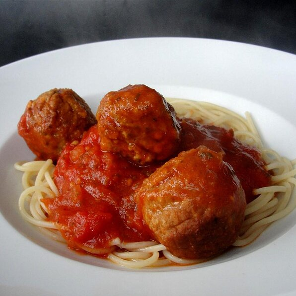

Spaghetti Sauce

Zesty traditional Spaghetti sauce
Delight your guests with this delicious spaghetti sauce inspired by Nonna
Ingredients
- 2 (16 ounce) cans diced tomatoes
- 2 (15 ounce) cans tomato sauce
- 1 tablespoon garlic powder
- 2 teaspoons white sugar
- 2 teaspoons dried parsley
- ½ teaspoon salt
- ¼ teaspoon dried oregano
- ¼ teaspoon dried basil
- ¼ teaspoon ground black pepper
Directions
- Combine diced tomatoes, tomato sauce, garlic powder, sugar, parsley, salt, oregano, basil, and pepper in a
saucepan
- Bring contents to Boil
- Reduce heat to medium-low, cover with lid and simmer until flavours blend, about 30min
Chef's Note
This is delicious to simmer meatballs in - add cooked meatballs in during the last
15 minutes of simmering.
this recipe stolen from allrecipes.com